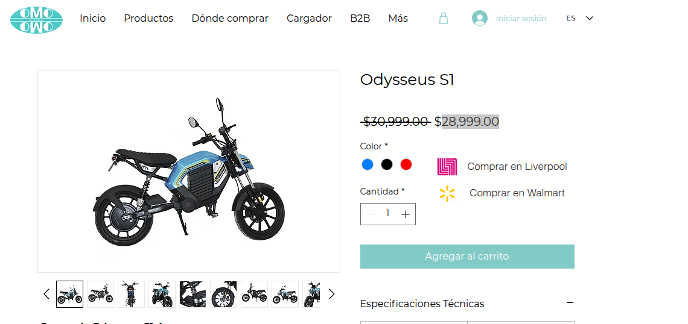
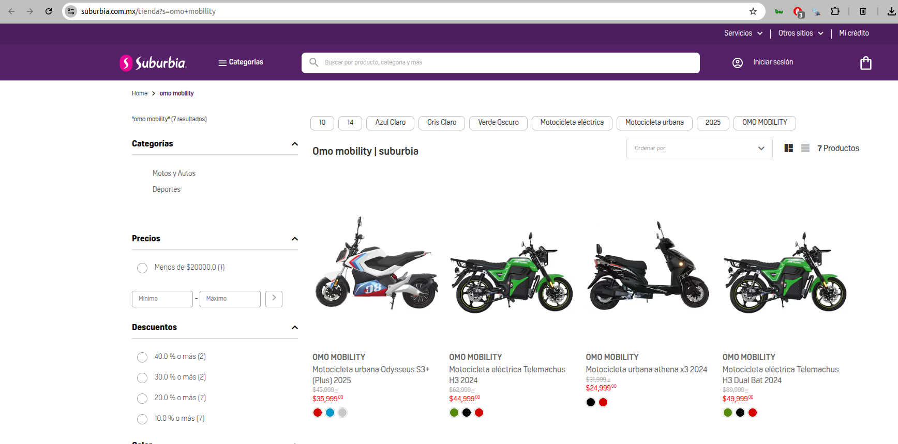
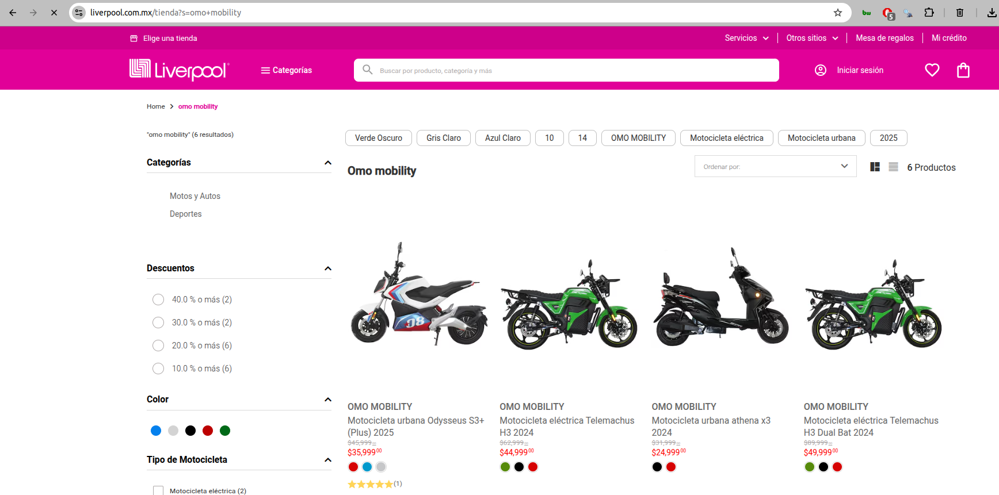
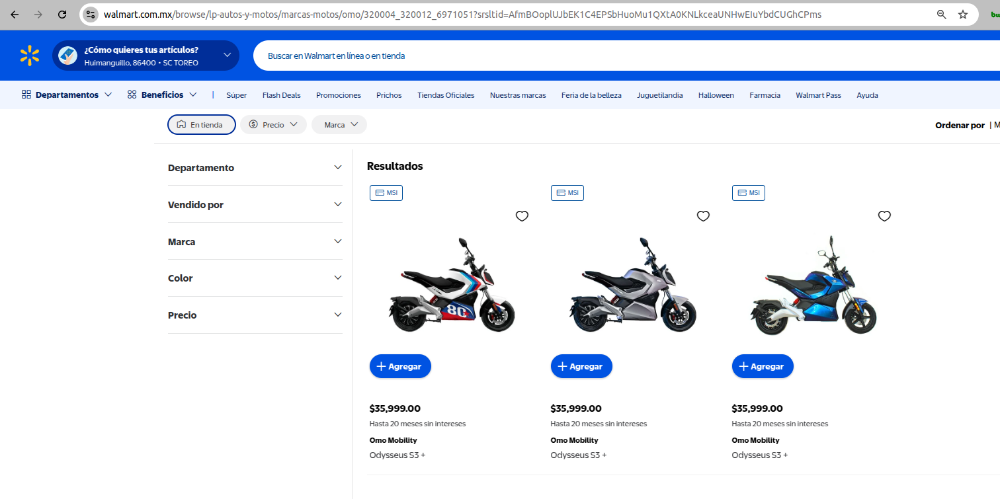

Evidencias de canal
Selección de capturas relacionadas con la presencia de marca y sus puntos de venta sin exhibición física local.




Qué vemos
- La marca se vende en línea y en tiendas, pero casi nadie puede ver o tocar la moto en persona.
- Probar la moto (test ride) es clave para quitar dudas de potencia, autonomía y carga.
- En Villahermosa mucha gente usa moto para trabajar; les importa pagar poco cada mes y gastar menos en mantenimiento.
- El clima caluroso y húmedo exige equipos resistentes y servicio cercano.
Oportunidades y riesgos (en pocas palabras)
Oportunidad
Riesgo
- Las tiendas actuales permiten activaciones y entregas sin abrir una tienda propia.
- A la larga, operar una moto eléctrica puede salir más barato (luz y mantenimiento) si lo explicamos con ejemplos reales.
- Sin exhibición ni prueba, baja la confianza; necesitamos test rides.
- Debemos explicar bien garantía, refacciones y dónde se da el servicio.
Oportunidades
- Hacer activaciones con pruebas de manejo en Suburbia, Liverpool y Walmart.
- Campaña mediática en redes (Facebook, Instagram, TikTok) con segmentación local y contenidos de prueba de manejo para activar la marca.
- Portal web de soporte siempre disponible con literatura técnica, garantías, manuales, atención al cliente y seguimiento de servicio.
- Oferta B2B para empresas de vigilancia/seguridad: paquetes de flota con medición de consumo y uso, costos totales de operación y beneficios para empresas.
- Mostrar con números simples cuánto se ahorra en luz y mantenimiento.
- Ofrecer pagos mensuales accesibles (12–24 meses) y aprobación en el lugar.
- Negociar con repartidores de apps y/o comercios locales.
Riesgos
- Si no pueden verla y probarla, la gente no compra.
- Habrá dudas sobre carga y autonomía en el calor si no damos información clara.
- Hay miedo a no encontrar refacciones o servicio si algo falla.
- Necesitamos mensualidades claras y accesibles.
Recomendación de lanzamiento por fases
En todas las fases, sostener campaña en redes con segmentación local, generación de contenido y creatividades enfocadas en prueba de manejo, virtudes del vehículo, financiamientos y pauta optimizada para activación y generación de demanda.
Fase 1 · Validación (0-8 semanas): Fines de semana con pruebas de manejo, campaña mediática en redes (FB/IG/TikTok) con segmentación local y pauta mínima, código QR y enlaces medibles a la página/portal y botón de WhatsApp para agendar, y registro de interesados. Medimos: alcance e interacciones en redes, personas interesadas, pruebas realizadas y contactos útiles.
Fase 2 · Impulso mediático (6-16 semanas): Colaboraciones con influencers regionales y medios locales; contenidos de reseñas, comparativas y pruebas controladas sin préstamo prolongado; códigos de creador y enlaces medibles; pauta con audiencias similares y remarketing. Medimos: alcance, engagement, CTR, leads obtenidos por creador y costo por adquisición.
Fase 3 · Escala: Abrir punto de servicio, 1-2 motos en exhibición y agenda semanal de pruebas; operación always-on en redes con testimonios/reviews y comunidad, y portal de soporte activo (tickets/WhatsApp, seguimiento de servicio, FAQs y descargas). Medimos: ventas al mes, CAC/retorno de pauta, tiempos de respuesta y recomendaciones de clientes.
Fase 1 · Validación (0-8 semanas): Fines de semana con pruebas de manejo, campaña mediática en redes (FB/IG/TikTok) con segmentación local y pauta mínima, código QR y enlaces medibles a la página/portal y botón de WhatsApp para agendar, y registro de interesados. Medimos: alcance e interacciones en redes, personas interesadas, pruebas realizadas y contactos útiles.
Fase 2 · Impulso mediático (6-16 semanas): Colaboraciones con influencers regionales y medios locales; contenidos de reseñas, comparativas y pruebas controladas sin préstamo prolongado; códigos de creador y enlaces medibles; pauta con audiencias similares y remarketing. Medimos: alcance, engagement, CTR, leads obtenidos por creador y costo por adquisición.
Fase 3 · Escala: Abrir punto de servicio, 1-2 motos en exhibición y agenda semanal de pruebas; operación always-on en redes con testimonios/reviews y comunidad, y portal de soporte activo (tickets/WhatsApp, seguimiento de servicio, FAQs y descargas). Medimos: ventas al mes, CAC/retorno de pauta, tiempos de respuesta y recomendaciones de clientes.
Recomendación corporativa (B2B)
¿Qué es B2B? Es la oferta dirigida de negocio a negocio (Business to Business): soluciones para empresas que buscan optimizar costos, controlar su flota y mejorar su operación.
- Paquetes de flota para vigilancia/seguridad y operación interna (5, 10, 20+ unidades).
- Medición en tiempo real de consumo, uso, horas de operación y ciclos de carga por unidad y por flota.
- Reportes de costo total de operación (TCO) y comparativos contra vehículos de combustión.
- Planes corporativos con financiamiento, facturación y centros de costo por área o proyecto.
- Portal corporativo con acceso por roles, soporte dedicado y SLA de respuesta.
- Objetivos y métricas: ahorro mensual por unidad, disponibilidad de flota, tiempos de respuesta de soporte y ROI de la inversión.
Le ofrecemos
- Sistema en tiempo real para registro de clientes, ventas y seguimiento postventa.
- Control de inventario y estado de unidades (en piso, en demo, vendidas, en servicio).
- Módulo de financiamiento: solicitudes, aprobación, calendario de pagos y alertas.
- Panel con métricas clave: pruebas de manejo, leads, tasa de conversión y ventas por zona.
- Acceso web y móvil, permisos por rol y exportación de datos (CSV/PDF).
- Planes corporativos para empresas (vigilancia/seguridad, logística) con facturación y centros de costo.
- Telemetría de consumo energético, horas de uso y ciclos de carga por unidad y por flota.
- Reportes de costo total de operación (TCO) y comparativos vs. combustible.